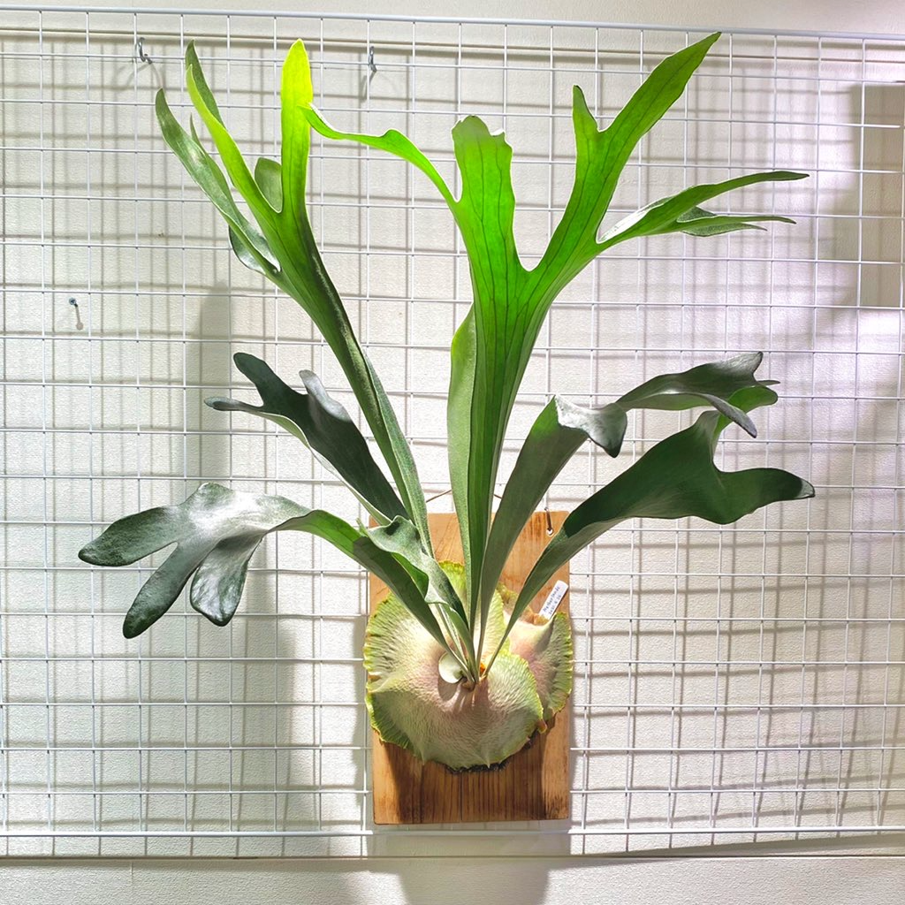

ビカクシダソムリエ
インテリアプランツとしてここ数年の間で大きく名を馳せたビカクシダ。
育ててみたいけれど初心者だから枯らさないか心配、どんな品種があるのか知りたい。
そんなあなたに、ビカクシダの原種18種からおすすめの品種を診断します。
質問
1/6
水やりの頻度はどれくらいがいい？
あなたにおすすめのビカクシダは・・・
ビフルカツム

特徴
最もスタンダードな品種。ホームセンターにも安価で販売されており、手軽にスタートすることができる。
育て方を調べる